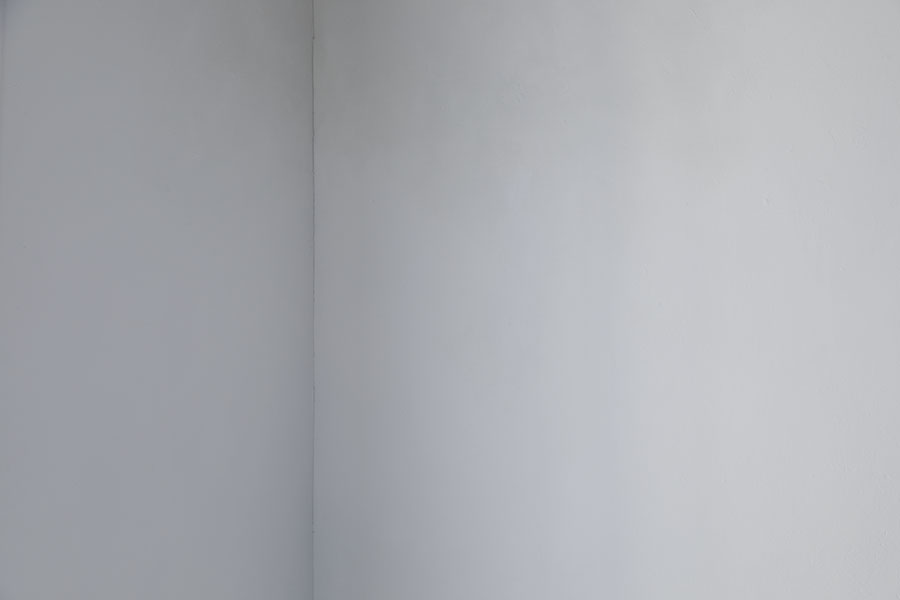
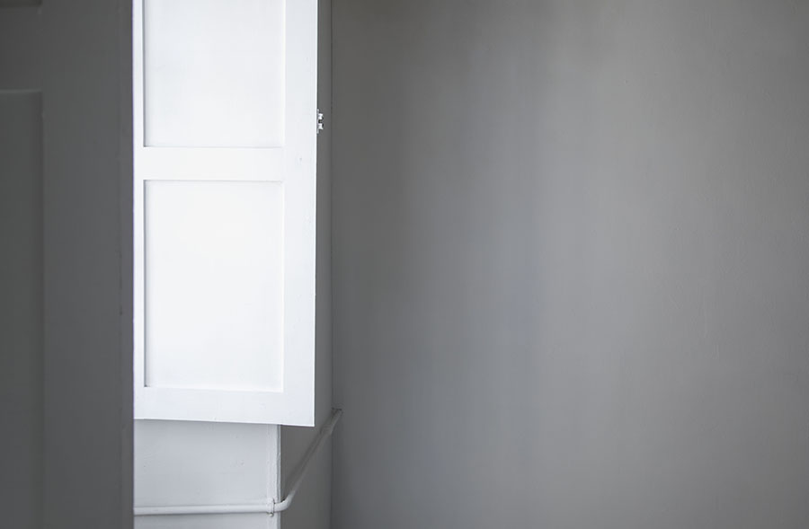
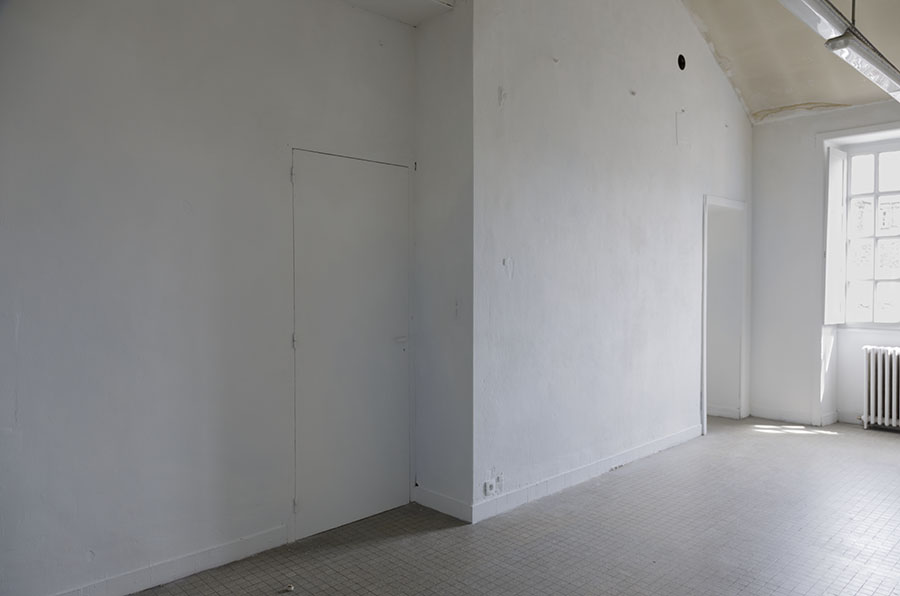
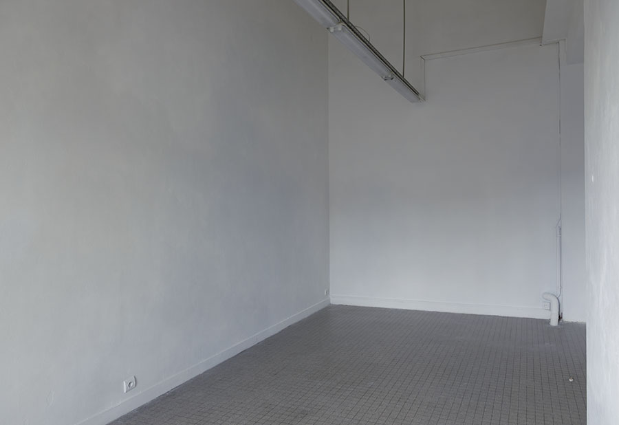
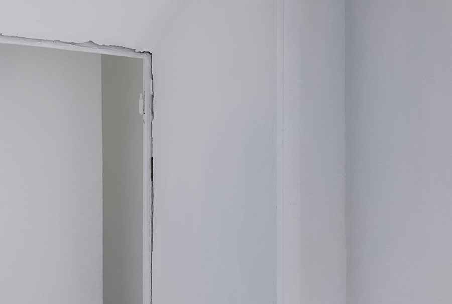

<!DOCTYPE html>
<html lang="zh-Hant-TW">
    <head>
        <meta charset="UTF-8">
        <!-- Enable RWD -->
        <meta name="viewport" content="width=device-width, initial-scale=1, shrink-to-fit=no">

        <title>Yi-Ping Huang / 藝術家・詩人</title>
        <!-- 檢查網頁簡述
        <meta name="description" content="Personal Web Site">
         -->
        <meta name="keywords" content="沉浸式空間, 行為藝術"> 
        <meta name="author" content="Yi-Ping Huang, 黃伊萍">

        <!--
        <link rel="icon" href="/favicon.ico" type="image/x-icon">
        <link rel="shortcut icon" href="/favicon.ico" type="image/x-icon">
        -->
        <link rel="stylesheet" href="../../../css/reset.css" media="all">
        <link rel="stylesheet" href="../../../css/style.css" media="all">
        <link rel="stylesheet" href="../../../css/projet.css" media="all">

    </head>

    <body>
        <header id="header">
            <input type="checkbox" id="burger">
            <label for="burger" class="toggle"><!-- &#9776; --></label>
            <ul class="langue_list" id="lg_list">
                <li>
                    <input type="radio" id="fr" name="langue" value="fr" class="langue" >
                    <label for="fr"><a href="../../../fr/projet/immersion_perf/un-moment-serein-donne.html">FR</a></label>
                </li>&thinsp;/
                <li>
                    <input type="radio" id="en" name="langue" value="en"  class="langue">
                    <label for="en"><a href="../../../en/projet/immersion_perf/un-moment-serein-donne.html">EN</a></label>
                </li>&thinsp;/
                <li>
                    <input type="radio" id="zh" name="langue" value="zh"  class="langue" checked>
                    <label for="zh"><a href="#">繁</a></label>
                </li>&thinsp;       
            </ul>

            <nav class="main_menu" id="nav_zone">           
                <h1 class="logo">
                    <a href="../../../index.html" >Yi-Ping Huang</a>
                    <!-- 要檢查螢幕大小變化時 如果螢幕縮到最小 名字會被換行的問題 -->
                </h1> 

                <ul class="menu_list" id="menu_fr">
                    <!-- 要加上效果：滑鼠滑到主選單選項時 加上效果或記號標示 -->
                    <li><a href="../../immersion_perf.html">Immersion&thinsp;/&thinsp;Performance</a></li>
                    <li><a href="#">Livre d'artiste&thinsp;/&thinsp;Écriture</a></li>
                    <li><a href="../../installation_sculpture.html">Installation&thinsp;/&thinsp;Sculpture </a></li>
                    <li><a href="../../estampe_edition.html">Estampe&thinsp;/&thinsp;Édition</a></li>
                    <li><a href="../../photographie.html">Photographie</a></li>
                    <li>&nbsp;</li>
                    <!-- <li>&nbsp;</li> -->
                    <li><a href="#">Actualité</a></li>
                    <li><a href="#">Exposition</a></li>
                    <li><a href="../../a_propos.html">À propos</a></li>
                    <li><a href="../../contact.html">Contact</a></li>
                </ul>
                <ul class="menu_list" id="menu_en">
                    <!-- 要加上效果：滑鼠滑到主選單選項時 加上效果或記號標示 -->
                    <li><a href="../../immersion_perf.html">Immersion&thinsp;/&thinsp;Performance</a></li>
                    <li><a href="#">Artists' book&thinsp;/&thinsp;Writing</a></li>
                    <li><a href="../../installation_sculpture.html">Installation&thinsp;/&thinsp;Sculpture </a></li>
                    <li><a href="../../estampe_edition.html">Printmaking&thinsp;/&thinsp;Edition</a></li>
                    <li><a href="../../photographie.html">Photography</a></li>
                    <li>&nbsp;</li>
                    <!-- <li>&nbsp;</li> -->
                    <li><a href="#">News</a></li>
                    <li><a href="#">Exhibition</a></li>
                    <li><a href="../../a_propos.html">About</a></li>
                    <li><a href="../../contact.html">Contact</a></li>
                </ul>
                <ul class="menu_list" id="menu_zh">
                    <!-- 要加上效果：滑鼠滑到主選單選項時 加上效果或記號標示 -->
                    <li><a href="../../immersion_perf.html">空間&thinsp;/&thinsp;行為藝術</a></li>
                    <li><a href="#">藝術家書籍&thinsp;/&thinsp;寫作</a></li>
                    <li><a href="../../installation_sculpture.html">裝置藝術&thinsp;/&thinsp;現代雕塑 </a></li>
                    <li><a href="../../estampe_edition.html">版畫&thinsp;/&thinsp;複數性作品</a></li>
                    <li><a href="../../photographie.html">攝影&thinsp;/&thinsp;畫報</a></li>
                    <li>&nbsp;</li>
                    <!-- <li>&nbsp;</li> -->
                    <li><a href="#">近況</a></li>
                    <li><a href="#">展覽</a></li>
                    <li><a href="../../a_propos.html">關於我</a></li>
                    <li><a href="../../contact.html">與我聯絡</a></li>
                </ul>
            </nav>  
            <div id="voile"></div>
        </header>
        <main>
            <!-- --------------------網頁變動內容 Main 開始----------------- -->
            <!-- |||||||||||||||||||||||||||||||||||||||||||||||||||||||||-->
            <h2 class="hidden">空間&thinsp;/&thinsp;行為藝術</h2>
            <nav class="sub_menu">
                <span class="sub_menu_title">空間&thinsp;/&thinsp;行為藝術 ____ </span> <br>
                <I class="titre"> Un moment serein donné (一刻閒暇的給予)</I>     
            </nav>

            <div class="display_container">  
                <figure  class="slide">
                    
                    <figcaption>Vue d’intallation, DNSEP Art, EESAB Rennes, 2019</figcaption>
                </figure>  
                <figure class="slide">
                        
                        <figcaption>Vue d’intallation, DNSEP Art, EESAB Rennes, 2019</figcaption>
                </figure>
                <figure class="slide">
                    
                    <figcaption>Vue d’intallation, DNSEP Art, EESAB Rennes, 2019</figcaption>
                </figure>
                <figure class="slide">
                    
                    <figcaption>Vue d’intallation, DNSEP Art, EESAB Rennes, 2019</figcaption>
                </figure>
                <figure class="slide">
                    
                    <figcaption>Vue d’intallation, DNSEP Art, EESAB Rennes, 2019</figcaption>
                </figure>
                


                <div class="slide_ctrl">
                    <button class="slides_btn display_left" onclick="plusDivs(-1)">&lt;<!--▷ &#10094;--></button>
                    <span id="s_index">1</span>&thinsp;&thinsp;/&thinsp;&thinsp;<span id="s_total"></span>
                    <button class="slides_btn display_right" onclick="plusDivs(1)">&gt;<!--▷ &#10095;--></button>
                </div>               
            </div>
            
            <article class="projet_info">     
                <h4><I class="titre t_bleu"> Un moment serein donné 一刻閒暇的給予 </I></h4> 
                <span class="legend t_bleu">
                   以空間作為架構，繪畫手段作為催化而提供的一個時刻、一個時間性。2019<br> 
                   <br>
                </span>
                <section class="illustration">    
                    <p>
                        作品本身是一個時間性的呈現。 <br>
                        一個平靜時刻的給予讓觀者能夠去品味當下及體驗空間和時間。<br>
                    </p>
                    <p>
                        作品中所進行的藝術操作主要是透過繪畫的方式在空間的表面——在牆面上進行干預。<br>
                    </p>
                    <p>
                        構成作品的空間經過了清掃，牆面上遺留下來的釘子和黏貼物被拆除，
                        凹凸或粗糙的紋理被手動填補、磨平，接著漆上了淺淺淡淡的顏色。 <br>
                        而天花板和地板則保留了原先的面貌以作為現實的參考點。
                    </p>
                    <p>
                        所有的干預動作都是細微的，甚或微不足道的，就連牆面的上色也都選擇了淺淡至幾不可見的色彩。<br>
                        這些細微的處理使空間柔化的同時卻也鮮活起來，透過視線，牆面與光線、空氣以及影子融合，彷彿無法觸及卻能感知到的，<br>
                        而原先無法捕捉的空氣和光影則看似有了形體，變得觸手可及。
                    </p>
                    <p>
                        如此空間使我們平靜，我們腦中浮躁的頻率被降低了，可以去對周遭的事物及現象給予關注並加以欣賞。<br>
                        透過這樣低調的不喧嘩的方式，讓身處這個空間的人，能夠自然而然的自發給予“當下”一個閒暇的時刻，去品味“當下”。
                    </p>
                </section> 
            </article>
            <div class="retour">
                <a href="../../immersion_perf.html">返回 ▲</a>
            </div>
            
           
            <!-- |||||||||||||||||||||||||||||||||||||||||||||||||||||||||-->
            <!-- -------------------網頁變動內容 Main 結束------------------ -->
        </main>
            
           
        <!-- ----------------------版型 Footer 開始--------------------- -->
        <!-- |||||||||||||||||||||||||||||||||||||||||||||||||||||||||| -->
        <footer>&copy; 2014 Yi-Ping Huang 黃伊萍</footer>
        <!-- |||||||||||||||||||||||||||||||||||||||||||||||||||||||||| -->
        <!-- ----------------------版型 Footer 結束--------------------- -->
        
    </body>
</html>

<script type="text/javascript" src="../../../js/menu.js"></script>  
<script type="text/javascript" src="../../../js/slide.js"></script>  
  